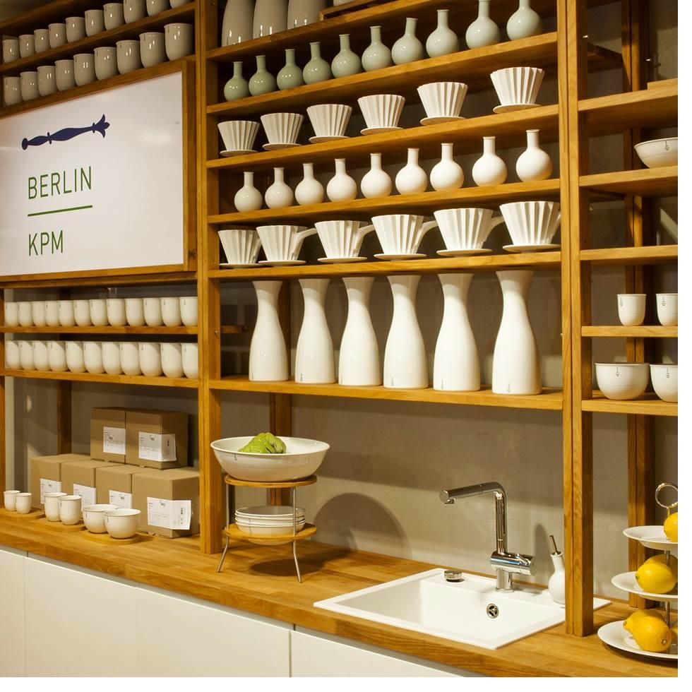
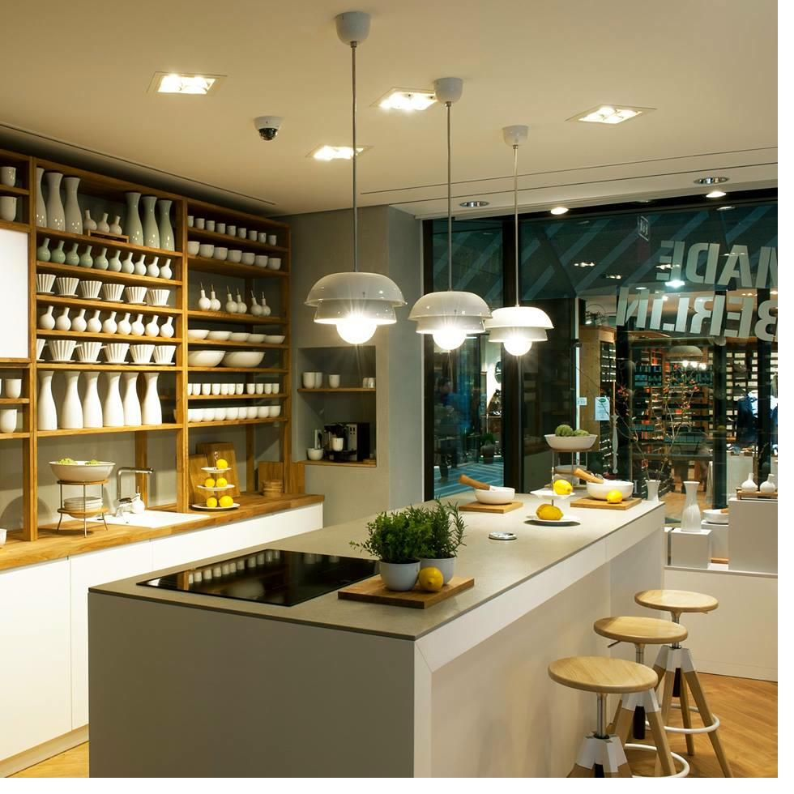
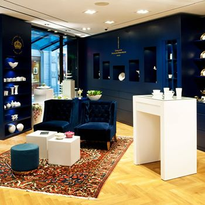
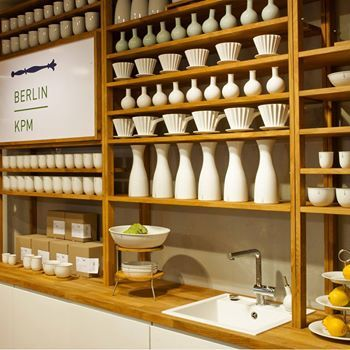
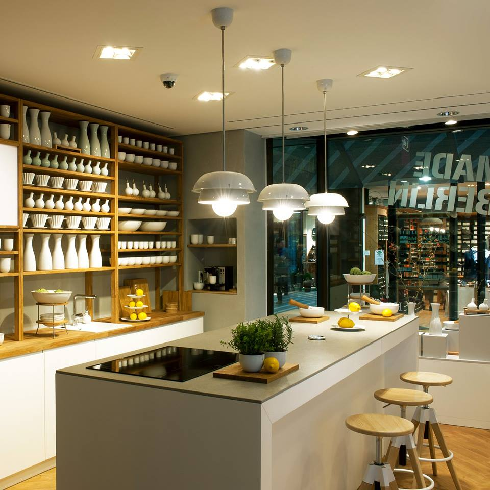

Über das Projekt
Ein Retail-Konzept zwischen Traditionsmarke und zeitgenössischer Inszenierung. Fokus auf Erlebnis, Verweildauer und Materialpräsenz. Raumzonen mit klarer Dramaturgie für Produkt, Beratung und Aufenthalt — eine Bildsprache, die historisches Erbe und Gegenwart zusammenführt.
Die Gestaltung verbindet die Wertigkeit des Porzellans mit einer modernen Raumatmosphäre. Kräftige Farbtöne, fein abgestimmte Materialien und eine sorgfältige Lichtführung schaffen Räume, in denen Besucher verweilen und die Produkte in ihrem besten Kontext erleben.






Dein Raum verdient mehr als Standard.
Erzähl mir von deinem Projekt — ich melde mich innerhalb von 48 Stunden.
Projekt anfragen →